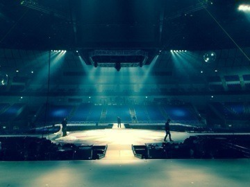

| 2014/02 22 Sat | 生駒里奈 2歳になりました！ |
今日は横浜アリーナにて2ND YEAR BIRTHDAY LIVEがありました！
来てくださった皆さん。
本当にありがとうございました！
そして来れなかった皆さん！
次のLIVEでよろしくお願いしますっ！
全曲披露ということで、もちろん水玉模様を披露させて頂きました！
会場の皆さんが水色のサイリウムを振って下さっていました。
つい。
凄く嬉しくて泣いてしまいました〜(；ω；)
ごめんなさい。
もちろん。
全曲全部緊張するし、楽しいけど。
今回の水玉模様は一人で歌わせて頂いたので、凄く緊張したし、元々私は歌があまりうまくありません。
歌う事に対して苦手意識が強く、逃げていた部分もありました。
今回、自分なりにきちんと歌と向き合う事が出来たかなと思います。
ボイトレの先生に教えていただきながら、練習しました。
これが100%ではない事はわかっています。
これからも一生懸命歌を練習しなければうまくなりません。
でも。
今の私の気持ちは伝わったのかな？
と思います。
聴いて下さってありがとうございました。
今日のお誕生日は凄く楽しかったです。
でもまた新たに私のダメな所を見つけました。
ダメですね〜。
なんか出来てるって思ってもそれはマイナスになっていることもある。
自分を分析して、ちゃんと武器を作らないと。
自分を育てないと。
皆さん。
私にアドバイスよろしくお願いします。
そして、
LIVEを作ってくださったスタッフの皆さん。
お疲れ様です！
ありがとうございました！
乃木坂46のメンバー、乃木坂ふぁむもそうだけど、
演出をつけて下さる方、舞台を作って下さる方、照明、音響、衣装、警備、ここには書ききれない程の沢山の方々がいるからこそ、私達はLIVEが出来る。
LIVEをする度にその姿を見て。
私はこの感謝の気持ちをどうすればいいのか考えて。
今回も沢山の姿を見ました。
いつかじゃなくて、
出来るだけすぐに返せる様に！
それくらい成長したいです！
乃木坂ふぁむのみなさんにも、びっくりして腰抜かせるくらい成長したいです！
まぁ、
急に出来るってのはないと思いますが。
私はもっと頑張りたいです。
あ〜
ほんと自分のダメな所とか弱い所強くしないとな〜(；ω；)
おおんっ！
3年目、
上り坂。
頑張りますっ！
よろしくお願いしますヽ(・∀・)ﾉ

へばなっ！☆